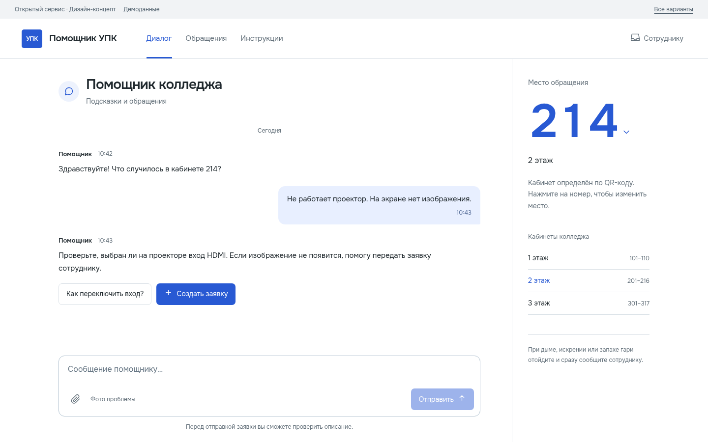
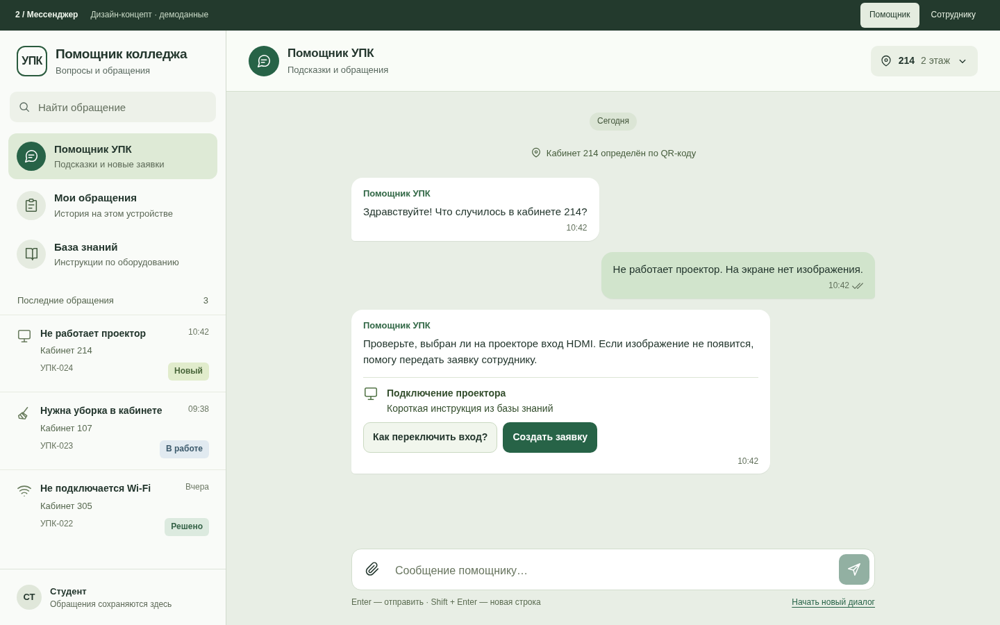
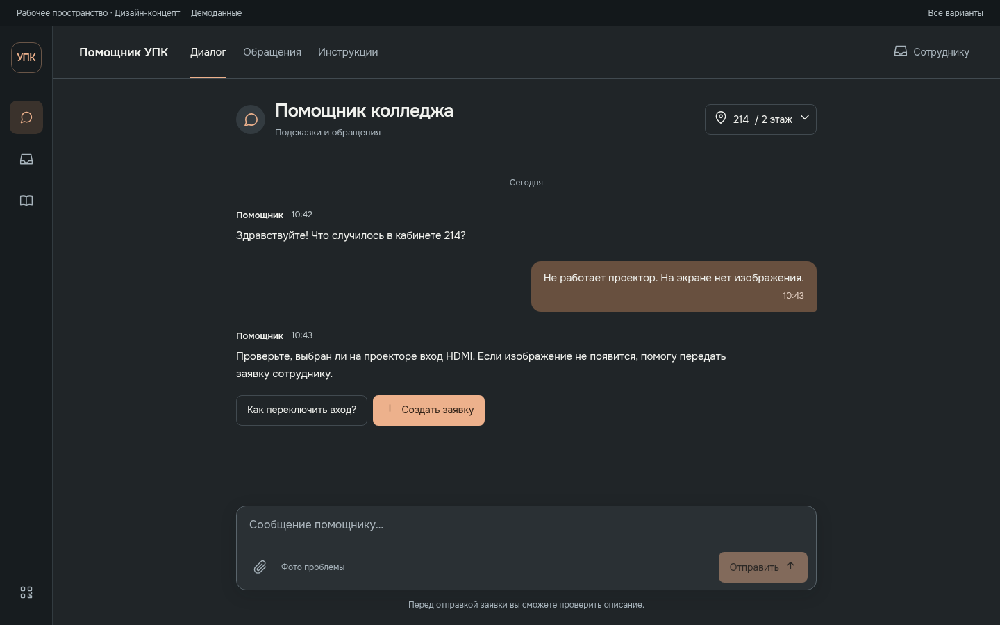
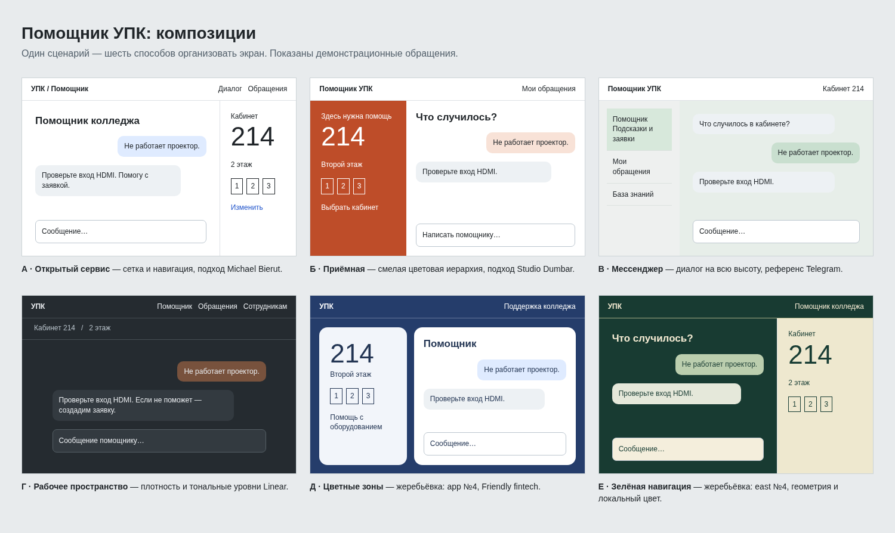

1. Открытый сервис
Просторный чат, верхняя навигация и отдельная колонка кабинета. Белый фон, кобальтовые действия, крупный номер из QR.
Три кликабельных дизайн-концепта: чат после QR и работа сотрудника с заявками. Внутри — демонстрационные данные и локальные действия.

Просторный чат, верхняя навигация и отдельная колонка кабинета. Белый фон, кобальтовые действия, крупный номер из QR.

Диалоги и обращения слева, переписка справа. Зелёная палитра и привычный мобильный чат — ближе всего к сценарию Telegram.

Тёмная среда, компактная навигация и центральный диалог. В панели сотрудника очередь и детали заявки видны одновременно.
Можно проверить отправку сообщения, выбор кабинета, черновик заявки и смену статуса. После выбора концепция переносится в основной React-интерфейс со всеми существующими функциями.
Текущий сайтПервый отбор из шести эскизов. Приёмная, Цветные зоны и Зелёная навигация оставлены как альтернативы.
